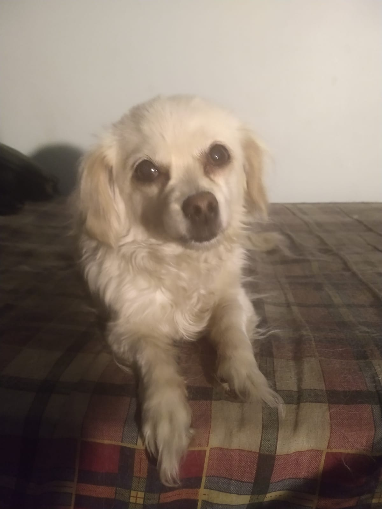
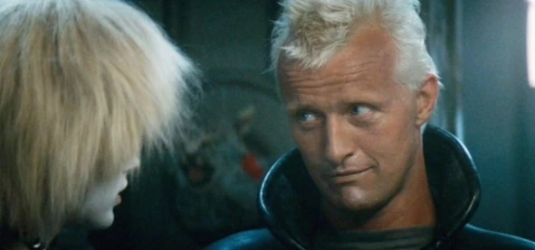
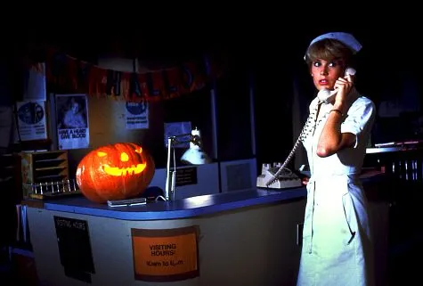
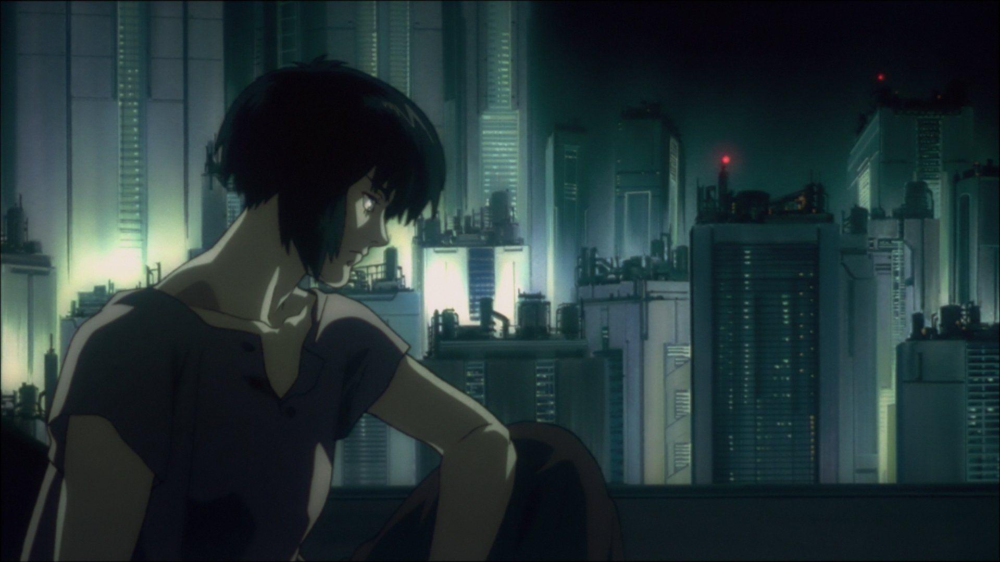

Federico Acosta Maneiro
Ciudad: Buenos Aires, Argentina
Edad: 32 años
Habilidades
Frontend
- HTML5
- CSS3
- JavaScript
- React
Backend y datos
- Node.js
- Java
- Spring Boot
- C#
- MySQL
Herramientas
- Figma
- Git y GitHub
Películas favoritas
-

Blade Runner Cyberpunk y existencialismo -

Halloween 2 Si no te gusta el slasher, mirala -

Ghost in the Shell Más cyberpunk y existencialismo
Discos favoritos
Interactuá con los discos para escucharlos.
-
Souvlaki
Slowdive
-
World is Yours
Mass of the Fermenting Dregs
-
Dropdead Totalitär split
Dropdead & Totalitär
Terminal
Ejecutá un comando y mirá qué responde.